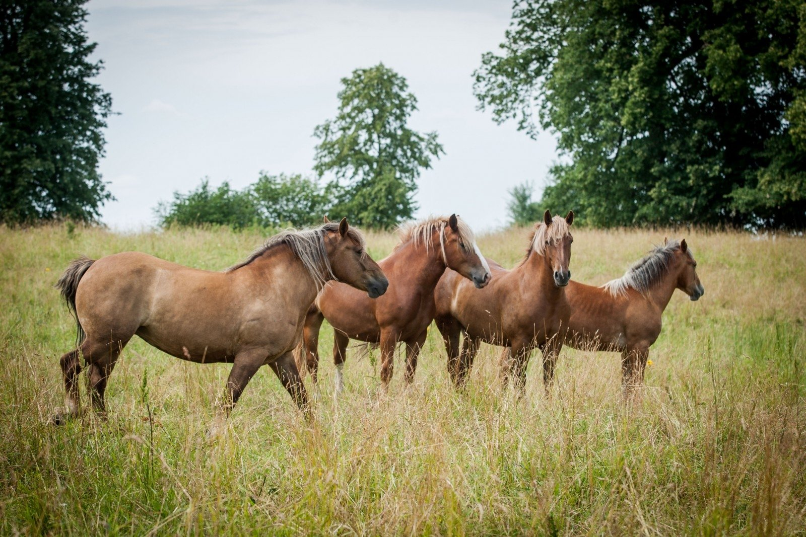

Apie arklius - Arkliai
- Arkliai - xszaislai.lt
arkliai gera kaina internetu. Didelis prekių pasirinkimas, saugus pirkimas, prekių pristatymas į namus ar biurą. Įsigykite prekes internetu pigiau. - 10 įdomių faktų apie arklius, kurių galbūt nežinojote: kuo ...
1970-aisiais buvo pastebėta, kad grynakraujai fryzų arkliai, besivaržantys kinkinių varžybose, prarado dalį savo ištvermės, tad Nyderlandų veisėjas Jurgen Hillner juos ėmė kryžminti su arabų žirgais, pasižyminčiais puikiomis darbinėmis savybėmis. - arkliai - LRT
Asociacija vienija Lietuvos sunkiųjų ir stambiųjų žemaitukų arklių augintojus. įkurta 1997-08-04, asociacijos prezidentas, Vigantas Indrašius, asociacijos administratorius Agnė Indrašienė - Apie arklius - Arkliai
Arkliai būna labai įvairių dydžių – nuo mažiausio pasaulio arklio Falabela, kurio aukštis ties gogu tesiekia 76 cm, iki didžiausio iš visų veislių šairo. Šairo eržilas turi būti ... - Arkliai, žirgai skelbimai | Plius.lt
Arkliai, žirgai (181) + Įdėti skelbimą Įsiminti skelbimai (0) Skelbimų: 181 . Atnaujinti viršuje. Naujausi viršuje Atnaujinti viršuje Pigiausi viršuje Brangiausi viršuje. Skuodo r. rugsėjo 1 d. 2. Perkame arklius . Įmonė nuolat superka įvairaus įmitimo arklius, moka PVM. ... - Pradinis puslapis - Arkliai.com
Pries mūsų akis dainuojantys arkliai! Tiesa, šios dainis ritmą gali parinkti tu pati. Pirmasis arkliukas dainuoja "bum čiči bum" ir yra labai mielas. Antrasis arklys turi storą balsą ir dainuoja "baaammmm bammmmmmm" kas suteikia jam žavumo. Trečiasis tai jau turbūt ne arklys, o kumelė, nes turi ploną balselį ir dainuoja "uuuu uuuu ... - Arkliai, žirgai flora, fauna - Skelbiu.lt
Antrą gyvenimo šansą gavę arkliai mėgaujasi gyvenimu: čia išnaudoja ne juos, o jie. 55. 246. Labas rytas, Lietuva 2020.06.25 07:37. Labas rytas, Lietuva I d. Arklių slėnyje – antras šansas nebereikalingiems gyvūnams: čia jie gali elgtis kaip nori. 246. 20:59. 147. - Įdomybės apie arklį - Arklio muziejus
Ar žinote kokia arklio galia (AG) yra lygi kiek kilovatų (ag kw ar kw ag)? Kilovatai į arklio galios skaičiuoklė - atsakymai čia.. - Arabo-Fryzas - Arkliai.com
Kai arkliai stovi ant labai šlapių grindų arba ganosi drėgnose ganyklose, gali prasidėti kanopos varlės puvimas. Jos grioveliuose susirenka šlapia, dvokianti gelsvai balta masė. Jei laiku nepašalinamos priežastys ir negydoma, gali išsivystyti kanopos vėžys. Varlę reikia gerai nuvalyti, pašalinti nešvarumus, į griovelius ... - arkliai žaidimai - žaisti nemokamai žaidimas žaidimas
Arkliai.com. 1 month ago . Karys su savo žirgu - kliūtinio jojimo pionieriai - šoka per griovį. ... See More See Less. Photo. View on Facebook

Arkliai Pagrindinis Apie arklius Arklių ligos ir mityba Jojimo ir apsauginiai arklio reikmenys Arklių papuošalai ir šukuosenos Foto Kontaktai ir komentarai Idomybės ir įvairovės Forumas Video apie arklius Blogas apie arklius Anekdotai apie arklius,kumeles ir žirgus ARKLIAI
Arkliai - tai labai meilūs,protingi, jautrūs ir nepakartojamo grožio gyvūnai.Moka plaukt, yra labai kantrūs.Pasižymi tuom,jog leidžiasi dresiruojami, tačiau jų charakterio bruožai labai skiriasi.
Jojama ant jų ilgus kilometrus.Senovėje žmonės naudojo arklius darbui,kovoms,kelionėms. Arkliai valgo šieną ir daržoves.Jiems negalima vartytis ant nugaros,nes gali užsisukti žarnynas ir arklys gali mirti.
Žmonės žinoma valgo arklieną ,bet mano nuomone-tai yra labai nežmoniška ir žiauru .Arklienos mėsa naudojama dešrelėms.Prieš skerdimą arkliai stovi jiems skirtoje patalpoje ,kur juos migdo,o po to - MIRTIS .Kai kuriuos arklius išperka tikri gyvūnų mylėtojai ne mėsai,o tolimesniam auginimui arba vaikams invalidams atrakcionams bei gydomiems vaikučių punktams.
Arkliai miega jiems skirtose vietose-arklidėse.Jiems yra paruošti indai ,kuriuose yra maistas,vanduo,vitaminai,druska.Jų miegamasis yra išklotas šienu. Arkliai šukuojami,daromos jiems šukuosenos,dažomos kanopos specialiais vitaminais,jų kūnas apipurškiamas specialiu tepalu,karčiai purškiami tam tikru skysčiu,kad jie nesusiveltų.Pas arklius yra vienas pirštas, paslėptas po kanopa.
Žinoma arklių yra ne viena rūšis,ju yra apie 20 ir daugiau.Vieni iš tokių - poniai,arkliai,žirgai,sportiniai,arabų,sunkieji ir t.t.
Jodinejimas Jodinejimui ant arklio reikia-balno,pavadžio,žąslų,kilpų.
Pirmiausia reikia-įkišti kairę koją į kilpą.Kaire ranka laikytis už karčių,o dešine ranka už balno.Staigiu pašokimu perkleti dešinę koją per balną ir įkišti į kilpą (dešinę koją).Iš karto į rankas reikia imti pavadį ir niekada jo nepaleisti,visą tą laiką,kol jojama ant arklio.Pavadys tai-arklio vairas.Kai arklys leidžiasi nuo kalno žemyn,jis eina labai lėtai ir atsargiai.Žmogus tuo metu turi-truputėlį atsilošti atgal ir laikyti pavadį.Kai jojama į kalną, arklys smarkiai įsibėgėja.Žinoma jis gali ir lėtai užlipti į kalną-taip kaip ir žmogus.Yra daug būdų joti ant arklio-tai zovada(labai greitas jojimas),ristele(greitas arklio žingsniavimas) ir lėtas žingsnis.Norėdami joti arkliu sėkmingai ,turite suprasti jų instinktus,charakterį ir elgseną.Žmogus ant arklio turi buti atsipalaidavęs,nes kitaip jis gali nejausti jodinėjimo malonumo arba blogiausiu atveju - net nukrist.
Dar daugiau apie arklius Lietimas - Arkliai lietimo pagalba pasikliauja žmonėmis ir sau giminingais gyvūnais.Ūseliai ant nosies padeda jiems atpažinti lietimo objektus ,dažniausiai maistą.Tuo paremtas ir arklio atsakos ,raitelio blauzdų spustelejimas ar raitelio pozicija balne.Arkliai dažnai vienas kitam trina ir kaso-snukiais,nugara,valo kailį - taip užmegzdami draugystės ryšius.Jie liečia vienas kitą, reikšdami savo draugiškumą.
Uoslė- Arklio uoslė yra daug kartų geresnė nei žmogaus.Arkliai dažnai atpažįsta savuosius naudodamiesi vien uosle.Arkliai gali užuosti išsiskiriančią žmogaus baimę.
Kūno kalba - Arkliai gali išreikšti-baimę,smalsumą,agresiją kūno kalba.Arkliai bijodami žmogaus ,atlenkia atgal ausis ir išplečia akis ,rodydami akių baltymą.Agresija reiskiama taip pat atlenktomis ausimis,dažnai nuleista,pariesta uodega,praverta burna,ir pakelta viena koja.Jei arklio ausys yra palinkusios į priekį-tai reiškia smalsumą.
Garsai - Arkliai bendrauja ir garsų pagalba.Prunkštimas,asocijuojantis su ilgu žiūrėjimu į vieną tašką(objektą),dažnai reiškia įspėjimą apie pavojų arba klausimą, ar jiems negresia pavojus.Arklys išpučia šnerves ,įtraukdamas oro ,norėdamas sužinoti, ar įsibrovėlis yra savas ,ar svetimas.Tylus ,švelnus žvengimas-draugiškumo išraiška žmonėms ,kuriuos jis atpažįsta kaip draugus.Arklys žvengia kai nori pranešti savo buvimo vietą arba kviesdamas pas save kitus.
Arklių anatomija Arklių spalvų paletė Kanopa Arklio skeletas ir visų kaulų pavadinimai 1-kiaušas ; 2-viršutinis žandikaulis
3-nosies kaulai ; 4-apatinis žandikaulis
5-kaklo slanksteliai ; 6-ketera (gogas)
7-krūtinės slanksteliai ; 8-juosmens slanksteliai
9-kryžkaulis ; 10- uodegos slanksteliai
11-šonkauliai ; 12-krūtinkaulis
13-mentė ; 14-peties sanarys
15-petikaulis ; 16-alkūnes sanarys
17-dilbio kaulai ; 18-riešas
19-plaštaka ; 20-čiurnos sanarys
21-kanopa ; 22-dubens kaulai
23-klubo sanarys ; 24-šlaunikaulis
25-kelio girnelė ; 26-kelio sanarys
27-blauzdikaulis ; 28-kulno sanarys
29-kulnikaulis ; 30-slėsna
Arklio vidaus organai 1-stemplė ; 2-plaučiai
3-diafragma ; 4-kepenys
5-kasa ; 6-storosios žarnos,pilvas
7-skrandis ; 8-inkstai
9-akloji žarna ; 10-žarnos
11-kiaušidės ; 12-gimda(kiaušintakiai)
13-tiesioji žarna
ARKLIŲ ETIOLOGIJA
Pasaulyje egzistuoja apie 200 veislių siejančių krypčių:
Darbiniai;
Sportiniai;
Mėsiniai;
Pieniniai.
Arkliai prijaukinti labai seniai iš tarpanų, azijiniai iš Pževalskio arklių.
Bioaklimatizacija
Optimali aplinkos temperatūra +12-17 C. Kylant temperatūrai – smarkiai prakaituoja. Bijo skersvėjų. Lengvai perneša šaltį. Komfortabilus gyvenamasis plotas arkliui 35 kv metrai. Jo kūno temperatūra 37,5-38,5, o kumeliuko 38,5-39 laipsniai. Alkano arklio temperatūra krenta, pašerto kyla. Fizinio darbo metu kūno temperatūra gali pakilti iki 42 laipsnių.
Arkliai gyvena iki 20-25 metų, o kai kurie ir iki 30 metų. Pasaulio rekordas Anglijoje išgyvenęs arklys 62 m. vieni arklio metai lyginami su 3,5-4 žmogaus metais.
Geras regėjimas . Mato smulkius daiktus. Nuleidus galvą tampa trumparegis. Bijo neryškių daiktų. Aplinką analizuoja pakėlęs galvą. Gerai mato naktį. Labai apakina šviesa – išderina akomodaciją.
Garsų diapazonas platus. Garsus gerai įsimena. Atpažįsta net šeimininko žingsnius, atsimena savo vardą, komandas, kurias atsirenka net triukšme. Arklys geriau supranta tęsiamu balsu pasakytas komandas. Jis pripranta prie žmogaus nurodymų ir juos vykdo. Neįprasti paliepimai trikdo arklį, dažnai nepatyręs šeimininkas tai supranta kaip nenorą paklusti. Netinkamai elgiantis su arkliu, jis gali gintis – sustoti, užsispirti, stengtis žmogų prispausti prie šalia esančio daikto. Taip pat arklys gali spirti, kąsti, blaškytis į šonus, pabėgti. Tai gali tapti įpročiu. Pagal savo prigimtį arkliai baikštūs, turintys didelę jėgą ir dažnai nenuspėjami savo elgsena. Todėl elgtis su jais reikia atsargiai ypač su jaunais, mažai apvažinėtais arkliais. Arklių savisaugos instinktas labai stiprus. Jie stengiasi pabėgti nuo bet kurio pavojaus, todėl jie labai atsargūs ir baikštūs.
Arklys jautriai reaguoja į žmogaus nuotaikas. Virpantys iš baimės ar susijaudinimo balsas arba šiurkštūs šauksmai gali būti jo nepasitikėjimo, netgi išgąsčio priežastis. Negalima arklio bijoti, nes jis tai jaučia ir būna priešiškas. Per daug švelnus elgesys taip pat ne visuomet tinkamas. Arklį kalbinant reikia prie jo prieiti iš kairės pusės ramiai ir drąsiai, kad netikėtas žmogaus pasirodymas arklio neišgąsdintų. Vedant arklį reikia eiti šalia, ties jo kaire mente ir netrukdyti jam laisvai žengti, dešine ranka palaikyti pavadį netoli arklio galvos, o kaire, nuleistoje rankoje laikyti pavadžio galą, kad jis nesipainiotų po kojomis. Uoslė gera (po šuns). Jautrios lūpos, ausys, oda. Oda turi judinamuosius raumenis, kurių pagalba nusibaido uodus, muses, gylius. Arkliai žingeidūs, nori pažinti aplinką, viską tyrinėdami žvilgsniu, uostinėdami, kumeliukai netgi bandydami dantimis. Bijo nepažystamų daiktų, nuo kurių gali išsivystyti net stresas. Tuo pasinaudojant senovėje buvo gydomi vidurių užkietėjimai. Gerai atsimena kelią, tačiau kumeliukai aplinkoje orientuojasi blogai. Arklys spartesniu žingsniu eina į namus, bet ne iš namų. Gera arklių orientacija laike. Neperneša aštrių kvapų, alkoholio. Bijo žvėrių, jų kvapų (ypač meškos, vilko).
Laukiniai arkliai sudaro bandas, kuri turi poras. Pulke yra herarhija. Susipažįstant vienas kitą apuosto, paliečia lūpomis kaklą, nugarą, lik pauodegio. Visuomet laikosi būrio: jei bėga tai visi, jei gulasi, tai irgi visi.
Arklys kasdamas koja rodo nekantrumą, arba puolimo poza. Bendrauja balsu, judina ausis, uodegą. Rujojančiai patelei parausta makštų prieangio gleivinė, pabrinksta lytinės lūpos, pasirodo gleivėtos ištakos, dažna šlapinimosi poza, vulvos „mirkčiojimas“, pasukta uodega. Kergiant, kumelėms tikslinga uždėti, taip vadinamas, kergimo pleškes, kad negalėtų užpakalinėmis kojomis sužaloti eržilo. Pirmus tris kumelingumo mėnesius kumelė labai jautri blogiems pašarams, sunkiam darbui (abortuoja).
Kumelingumas užtrunka 11 mėn. Prieš kumeliavimąsi dažnai šlapinasi, prakaituoja, padidėja tešmuo, kumelė darosi nerami, atsipalaiduoja dubens raiščiai, sukasi garde, taikosi atsigulti. Kumeliuojasi naktimis gulėdamos. Pats kumeliavimasis trunka 10-15 min., o tiesiogiai vaisius išstūmimas trunka tik 2-3 min. Kištis į normalų kumeliavimosi procesą nereikia. Jei gimsta kumeliukas dangaluose, kumelė juos perplėšia dantimis.
Arkliai gali ilsėtis tiek stovėdami, tiek gulėdami. Tačiau ilgai negalėdami pailsėti atsigulus, jiems kinta elgsena.
Žolę griebia lūpomis, nukanda kandžiais. Tuštinasi stovėdami, bet gali išsituštinti ir einant. Vengia apsišlapinti kojas, todėl priima šlapinimosi pozą. Pašvilpimu skatinamas šlapinimosi procesas. Per parą arklys išskiria 3-10 l šlapimo ir iki 30kg fekalijų. Stambius pašarus ėda neskubėdami, kai tuo tarpu koncentratus suėda greitai, neatsitraukdami nuo lovio. Vasarą arklys gali išgerti iki 30-60 l vandens, o žiemą iki 20-30 l.
Arkliui kanopos – antros akys. Eidami jie kanopomis jaučia dirvą, kelią. Pagal kanopų būklę galima spręsti apie arklio sveikatą.
Kumeliukai daug guli, žaidžia, bėgioja. Kumeliukai sudaro kompanijas po 2-3. atjunkomi kumeliukai 6 mėn. Svarbu kuo anksčiau kumeliuką pratinti prie apynasrio ir tinkamai auklėti. Geras žirgo auklėjimas – tiek saugumo tiek ir gyvūno sveikatos pagrindas. Kumeliuko auklėjimas prasideda dar kumelingumo metu. Jei gerai elgiamasi su kumele, ji rami, prisileidžia žmogų. Gimęs kumeliukas ima pavyzdį iš kumelės, ją mėgdžiodamas. Svarbu nuo pirmos dienos su kumeliuku bendrauti jį kalbinti, paglostyti, pakelti kanopą, pastuksenti į ją. Kumeliukas įgavęs pasitikėjimą žmogui liks jam ištikimas visą gyvenimą.
Ganantis, eržilas saugo bandą, ją gina. Gali turėti asistentą. Jeigu arklys nerimauja, tai gulasi, tai keliasi, voliojasi, sėdi šuns poza – tai pavojingi dieglių požymiai.
Laukinių protėvių elgesio likučiai – patys save treniruoja, patys save masažuoja, voliojasi, užuodžia laukinius žvėris ir jų bijosi.
Powered by Create your own unique website with customizable templates. Get Started 



Mauris vulputate dolor
Rutrum fermentum nibh in augue praesent urna congue rutrum.
Etiam posuere